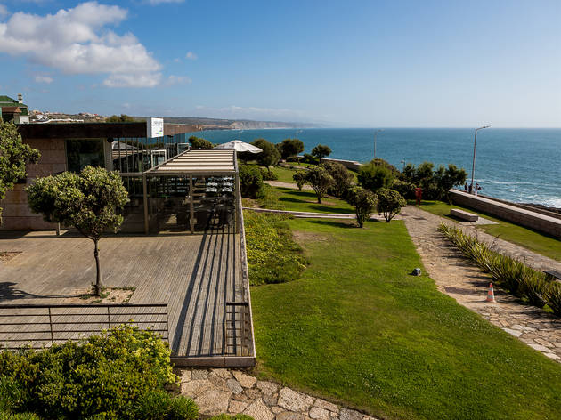
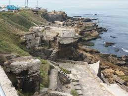
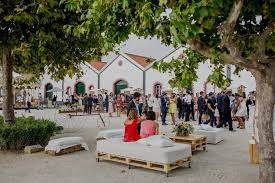
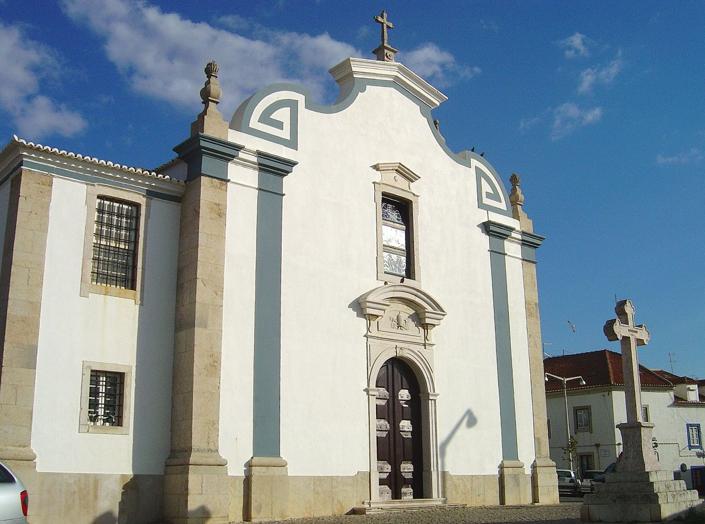
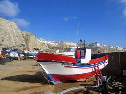
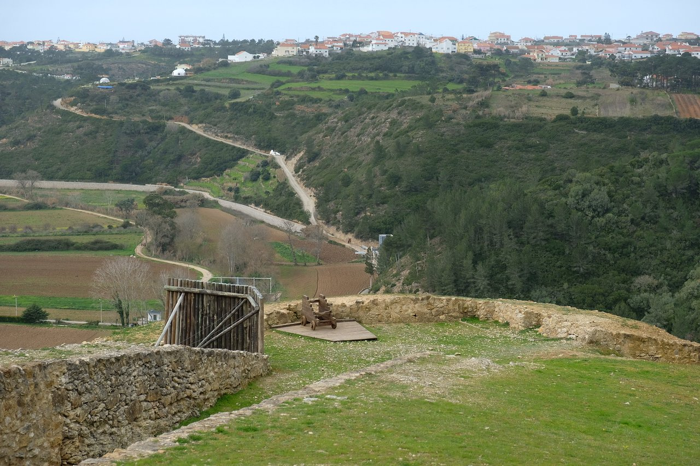

Galeria
Parque de Santa Marta

Aproveite as esplanadas, o bar e o restaurante para apreciar o melhor que a Ericeira tem para lhe oferecer.
Parque das Furnas

Este parque na zona das Furnas da Ericeira é bastante agradável para um passeio ligeiro ou mesmo tomar um aperitivo no café.
Quinta dos Leitões

Moradia independente, recuperação de antigos espaços agrícolas, com grande privacidade, totalmente equipada.
Igreja de São Pedro

A Igreja de São Pedro localiza-se em Ericeira, concelho de Mafra.
Porto de Pesca

O porto é pequeno, e fácilmente percorrível com segurança (não existem molhes, os barcos são movimentados com auto-gruas).
Forte de Zambujal

O Forte do Zambujal localiza-se na freguesia da Carvoeira, no concelho de Mafra.
Powered by Bernardo Alves